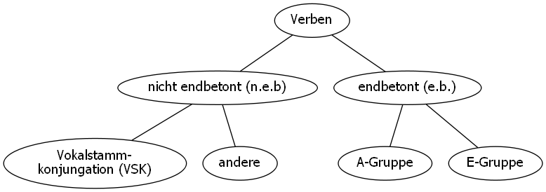

Sprachen
Links
- Anki Web
- Linguee: https://www.linguee.de/
- DeepL Übersetzer: https://www.deepl.com/translator
Griechisch
Theory
- The syntax of natural language: https://www.ling.upenn.edu/~beatrice/syntax-textbook/
Neugriechisch
Verben
Formenbildung allgemein

Beispiele:
- nicht endbetont
- τρέχω
- τρώω (Vokalstammkonjungation)
- endbetont
- μιλάω (Α)
- αγαπώ (Α)
- πουλώ (E)
Jedes Verb hat 2 Verbstämme:
- Präsensstamm (dauerhafte, wiederholende Handlungen)
- Aoriststamm (einmalige Handlungen)
Meist werden die Zeiten gebildet mit:
(Augment) + Verbstamm + Endung
Welche Zeiten gibt es?
- Präsens (ich lerne - μαθαίνω)
- Aorist (ich lernte - έμαθα)
- Imperfekt (ich lernte - μάθαινα)
- Perfekt (ich habe gelernt - έχω μάθει)
- Plusquamperfekt (ich hatte gelernt - είχα μάθει)
- Futur continuum (ich werde lernen - θα μαθαίνω)
- Futur punktuell (ich werde lernen - θα μάθω)
- Futur 2 (ich werde gelernt haben - θα έχω μάθει)
Das alles gibt es im Aktiv und im Passiv.
Überblick Aktiv
| Präsens | Zukunft/Konjunktiv | Aorist | Imperfekt | Imperativ | |
|---|---|---|---|---|---|
| εγω | διαβάζω (n.e.b.) | θα/να διαβάσω | διάβασα | διάβαζα | |
| μιλ(ά)ω (e.b. A) | θα μιλήσω | μίλισα | μιλούσα | ||
| οδηγώ (e.b. E) | θα οδηγήσω | οδήγησα | οδηγούσα | ||
| εσυ | διαβάζεις | θα διαβάσεις | διάβασες | διάβασες | διάβαζε |
| μιλάς | θα μιλήσεις | μίλισες | μιλούσες | μιλά | |
| οδηγείς | θα οδηγήσεις | οδήγησες | οδηγούσες | οδήγει | |
| αυτός | διαβάζει | θα διαβάσει | διάβασε | διάβασε | |
| αυτή | μιλά | θα μιλήσει | μίλησε | μιλούσε | |
| αυτο | οδηγεί | θα οδηγήσει | οδήγησε | οδηγούσε | |
| εμείς | διαβάζουμε | θα διαβάσουμε | διαβάσαμε | διαβάσουμε | |
| μιλούμε | θα μιλήσουμε | μιλήσαμε | μιλούσαμε | ||
| οδηγούμε | θα οδηγήσουμε | οδηγήσαμε | οδηγούσαμε | ||
| εσείς | διαβάζετε | θα διαβάσετε | διαβάσατε | διαβάζατε | διαβάζετε |
| μιλάτε | θα μιλήσετε | μιλήσατε | μιλούσατε | μιλάτε | |
| οδηγείτε | θα οδηγήσετε | οδηγήσατε | οδηγούσατε | οδηγείτε | |
| αυτόι | διαβάζουν | θα διαβάσουν | διάβασαν | διαβάζαν | |
| αυτές | μιλούν | θα μιλήσουν | μίλισαν | μιλούσαν | |
| αυτά | οδηγούν | θα οδηγήσουν | οδήγησαν | οδηγούσαν |
Passiv
Überblick
| Präsens | Zukunft/Konjunktiv | Aorist | Imperfekt | Imperativ | |
|---|---|---|---|---|---|
| θα/να | |||||
| εγω | χρειάζομαι (n.e.b) | χρειαστώ | χρειάστηκα | χρειαζόμουν | |
| βαριέμαι (e.b. simpel) | βαρεθώ | βαρέθηκα | βαριόμουν | ||
| θυμάμαι (e.b. aF) | θυμηθώ | θυμήθηκα | θυμόμουν | ||
| διηγούμαι (e.b. E) | διηγηθώ | διηγήθηκα | διηγιούμουν | ||
| εξαρτώμαι (e.b. A) | εξαρτηθώ | εξαρτήθηκα | εξαρτώμουν | ||
| εσυ | χρειάζεσαι | χρειαστείς | χρειάστηκες | χρειαζόσουν | χρειάσου |
| βαριέσαι | βαρεθείς | βαρέθηκες | βαριόσουν | βαρέσου | |
| θυμάσαι | θυμηθείς | θυμήθηκες | θυμόσουν | θυμήσου | |
| διηγείσαι | διηγηθείς | διηγήθηκες | διηγείσο | διηγήσου | |
| εξαρτάσαι | εξαρτηθείς | εξαρτήθηκες | εξαρτώσουν | εξαρτήσου | |
| αυτός | χρειάζεται | χρειαστεί | χρειάστηκε | χρειαζόταν | |
| αυτή | βαριέται | βαρεθεί | βαρέθηκε | βαριόταν | |
| αυτο | θυμάται | θυμηθεί | θυμήθηκε | θυμόταν | |
| διηγείται | διηγηθεί | διηγήθηκε | διηγείτο | ||
| εξαρτάται | εξαρτηθεί | εξαρτήθηκε | εξαρτώταν | ||
| εμείς | χρειαζόμαστε | χρειαστούμε | χρειαστήκαμε | χρειαζόμαστε | |
| βαριόμαστε | βαρεθούμε | βαρεθήκαμε | βαριόμαστε | ||
| θυμόμαστε | θυμηθούμε | θυμηθήκαμε | θυμόμαστε | ||
| διηγούμαστε | διηγηθούμε | διηγηθήκαμε | διηγούμασταν | ||
| εξαρτιόμαστε | εξαρτηθούμε | εξαρτηθήκαμε | εξαρτώμασταν | ||
| εσείς | χρειάζεστε | χρειαστείτε | χρειαστήκατε | χρειάζονταν | χρειαστείτε |
| βαριέστε | βαρεθείτε | βαρεθήκατε | βαριόσαστε | βαρεθείτε | |
| θυμάστε | θυμηθείτε | θυμηθήκατε | θυμόσαστε | θυμηθείτε | |
| διηγείστε | διηγηθείτε | διηγηθήκατε | διηγείσθο | διηγηθείτε | |
| εξαρτάστε | εξαρτηθείτε | εξαρτηθήκατε | εξαρτώσασταν | εξαρτηθείτε | |
| αυτόι | χρειάζονται | χρειαστούν | χρειάστηκαν | χρειάζονταν | |
| αυτές | βαριούνται | βαρεθούν | βαρέθηκαν | βαριόνταν | |
| αυτά | θυμούνται | θυμηθούν | θυμήθηκαν | θυμούνταν | |
| διηγούνται | διηγηθούν | διηγήθηκαν | διηγούντο | ||
| εξαρτώνται | εξαρτηθούν | εξαρτήθηκαν | εξαρτώνταν |
- aF .. attische Form
Wie διηγούμαι (erzählen), n.e.b E-Gruppe, sind folgende Verben zu konjungieren:
- ασχολούμαι (sich beschäftigen)
- συνεννοούμαι (sich verständigen)
- θεωρούμαι (gehalten werden für)
- αρνούμαι (verweigern)
Die wichtigsten Verben
- Die meisten haben passive Form aber aktive Bedeutung (Deponenzien).
- Diejenigen, welche auch eine aktive Form haben, sind in der Tabelle mit beiden Präsensformen eingetragen.
| Ενεστώτας | Αόριστος | Μέλλοντας/Υποτακτική | |
|---|---|---|---|
| aktiv | Παρατατικός | Πρόστακτικη | |
| θυμάμαι | θυμήθηκα | θα/να θυμηθώ | |
| θυμόμουν | θυμήσου/θυμηθείτε | ||
| κοιμάμαι | κοιμήθηκα | θα/να κοιμηθώ | |
| κοιμόμουν | κοιμήσου/κοιμηθείτε | ||
| έρχομαι | ήρθα | θα/να έρθω | |
| ερχόμουν | έλα/ελάτε | ||
| κάθομαι | κάθησα | θα/να καθήσω | |
| καθόμουν | κάτσε(κάθισε)/καθίστε | ||
| εξαρτώμαι | εξατήθηκα | θα/να εξαρτηθώ | n.e.b A-Gruppe |
| εξαρτόμουν | korrekt | ||
| σκέπτομαι | σκέφτηκα | θα/να σκεφτώ | |
| σκεφτόμουν | σκέψου/σκεφτείτε | ||
| φοβάμαι | φοβήθηκα | θα/να φοβηθώ | |
| φοβόμουν | φοβήσου/φοβηθείτε | ||
| χρειάζομαι | χρειάστηκα | θα/να χρειαστώ | |
| χρειαζόμουν | χρειάσου/χρειασθείτε | ||
| φαίνομαι | φάνηκα | θα/να φανώ | |
| φαινόμουν | φάνου/φανείτε | ||
| πλένομαι | πλύθηκα | θα/να πλυθώ | |
| πλένω | πλενόμουν | πλύσου/πλυθείτε | |
| ετοιμάζομαι | ετοιμάστηκα | θα/να ετοιμαστώ | |
| ετοιμαζόμουν | ετοιμάσου/ετοιμαστείτε | ||
| χτενίζομαι | χτενίστηκα | θα/να χτενιστώ | |
| χτενίζω | χτενιζόμουν | χτενίζου/χτενίζεστε | |
| σηκώνομαι | σηκώθηκα | θα/να σηκωθώ | |
| σηκώνω (heben) | σηκωνόμουν | σηκώσου/σηκωθείτε | |
| σκουπίζομαι | σκουπίστηκα | θα/να σκουπιστώ | |
| σκουπίζω | σκουπιζόμουν | σκουπίσου/σκουπιστείτε | |
| ξυρίζομαι | ξυρίστικα | θα/να ξυριστώ | |
| ξυρίζω | ξυριζόμουν | ξυρίσου/ξυριστείτε | |
| βάφομαι | βάφτηκα | θα/να βαφτώ | |
| βάφω | βαφτόμουν | βάψσου/βαφτείτε | |
| συναντόμαι | συναντήθηκα | θα/να συναντηθώ | |
| συναντώ | συναντιόμουν | συναντήσου/συναντηθείτε | |
| λυπάμαι | λυπήθηκα | θα/να λυπηθώ | |
| λυπόμουν | λυπήσου/λυπηστείτε | ||
| ντύνομαι | ντύθηκα | θα/να ντυθώ | |
| ντυνόμουν | ντύσου/ντυθείτε |
Weiter Verben
| Ενεστώτας | Αόριστος | Μέλλοντας/Υποτακτική | |
|---|---|---|---|
| Παρατατικός | Πρόστακτικη | ||
| αισθάνομαι | αισθάνθηκα | θα/να αισθανθώ | |
| αισθανόμουν | αισθάνσου/αισθανθείτε | ||
| επισκέπτομαι | επισκέφτηκα | θα/να επισκεφτώ | |
| επισκεπτόμουν | επισκέψου/επισκεφτείτε | ||
| στέκομαι | στάθηκα | θα/να σταθώ | |
| στεκόμουν | στάσου/σταθείτε | ||
| ντύνομαι | ντύθηκα | θα/να ντυθώ | |
| ντύνόμουν | ντύσου/ντυθείτε | ||
| ντρέπομαι | ντράπηκα | θα/να ντραπώ | |
| ντρεπόμουν | ντράπου/ντραπείτε | ||
| ασχολούμαι | ασχολήθηκα | θα/να ασχοληθεί | n.e.b E-Gruppe |
| sich beschäftigen | ασχολούμουν | ασχολήσου/ασχοληθείται | korrekt |
korrekt…ist korrekt zu konjungieren (nicht die einfache Form), siehe Überblick.
Verben mit passiver Form aber aktiver Bedeutung (Deponentien)
| Präsens | Imperfekt | Beispiel | |||
|---|---|---|---|---|---|
| n.e.b. | e.b. | ||||
| -ομαι | -άμαι | -όμουν | έρχ-ομαι | ερχ-όμουν | |
| -εσαι | -άσαι | -όσουν | έρχ-εσαι | ερχ-όσουν | |
| -εται | -άται | -όταν | έρχ-εται | ερχ-όταν | |
| -όμαστε | -όμαστε | -όμασταν | έρχ-ομαστε | ερχ-όμασταν | |
| -εστε | -άστε | -όσασταν | έρχ-εστε | ερχ-όσασταν | |
| -ονται | -όυνται | -ονταν | έρχ-ονται | έρχ-ονταν |
- χρειάζομαι (brauchen)
- επισκέπτομαι (besuchen)
- έρχομαι (kommen)
- αισθάνομαι (sich fühlen)
- κοιμάμαι (schlafen)
- σκέπτομαι (denken)
- πιάνομαι (sich festhalten)
Beispiele
- Πάντα ντρεπόταν για τα μεγάλα του αυτιά.
- Θυμηθείτε τις τελευταίες διακοπές μασ!
- Κωστα, σε ποια γλώσσα συνεννοείσαι με την Ισαβέλα;
- Και σήμερα η διευθύντρια αρνήθηκε να τον δει.
- Ο Νίκος θα σας διηγηθει τώρα μια πολύ παράξενη ιστορία που εγίνε στο Ισραήλ.
- Κάθε φορά ετοιμάζονταν πολύ αργά και πάντα αργούσαν.
Präsens (Ενεστώτας)
Aktiv
Passiv
Verbendungen - Präsens
| n.e.b. | e.b. (A) korrekt | e.b.(E) korrekt | e.b. (attische Form) | e.b. beide |
|---|---|---|---|---|
| -ομαι | -ώμαι | -ούμαι | -άμαι | -ιέμαι |
| -εσαι | -άσαι | -είσαι | -άσαι | -ιέσαι |
| -εται | -άται | -είται | -άται | -ιέται |
| -όμαστε | -ώμαστε | -ούμαστε | -όμαστε | -ιόμασται |
| -εστε | -άστε | -είστε | -άστε | -ιέστε |
| -ονται | -ώνται | -ούνται | -ούνται | -ιόνται |
| Beispiele | ||||
| χρειάζ-ομαι | εξαρτ-ώμαι | πωλ-ούμαι | κοιμ-άμαι | συναντ-ιέμαι |
| βρίσκ-ομαι | (abhängig sein) | (verkauft werden) | θυμ-άμαι | (sich treffen) |
| τιμώμαι | εκδικούμαι | (sich erinnern) | αγαπ-ιέμαι | |
| (geehrt werden) | (Rache üben) | λυπ-άμαι | βαριέμαι | |
| θεωρούμαι | (bedauern) | |||
| (gehalten werden für) | φοβ-άμαι | |||
| διηγούμαι | (sich fürchten) | |||
| (erzählen) | ||||
| καλούμαι | ||||
| (gerufen, geladen werden) | ||||
| αρνούμαι | ||||
| (sich weigern) |
Beispiele
n.e.b
- βρίσκω -> βρίσκομαι
- επιτρέπω -> επιτρέπομαι (erlaubt sein, werden)
- ζεσταίνω -> ζεσταίνομαι (erwärmen, sich erwärmen)
- ντύνω -> ντύνομαι (jmd. anziehen, sich anziehen)
- νοικιάζω -> νοικιάζομαι (mieten, vermieten)
- ετοιμάζω -> εταιμάζομαι (wärmen, sich erwärmen)
- πλένω -> πλέωομαι (waschen, sich waschen)
- πληρώνω -> πληρώνομαι (bezahlen, bezahlt werden)
e.b. (A) (70% der e.b. Verben können in dieser Form konjungiert werden.)
- συναντώ -> συναντιέμαι
Manche Verben müssen aber korrekt gebildet werden:
e.b. (A)
- εξαρτώμαι
e.b. (E)
- εκδικούμαι (Rache üben)
- πωλώ -> πωλούμαι (verkauft werden)
- οδηγώ -> οδηγούμαι (fahren -> geführt werden)
Aorist (Αόριστος)
Passiv
Herleitung der passiven Form aus der aktiven Form:
- Man geht von der aktiven Endung im Aorist aus und macht dann folgende Anpassungen:
| -σα | wird zu | -θηκα | -στηκα |
Beispiele:
καθαρίζω / καθάρι(σα) -> καθαρί(στηκα)
ετοιμάζω / ετοίμασα -> ετοιμάστηκα (fertig gemacht werden)
| -ξα | wird zu | -χτηκα |
Beispiele:
ανοίγω / άνοι(ξα) -> ανοί(χτηκα)
| -ψα | wird zu | -φτηκα |
Beispiele:
βάφω / έβα(ψα) -> βά(φτηκα) (gefärbt werden)
Imperfekt (Παρατατικός)
Aktiv
Passiv
Verbendungen - Präsens
Meist ist die simple Form mögliche (70%), aber für manche Verben muss korrekt konjungiert werden.
| n.e.b. | e.b. (simpel) | e.b. (E-Gruppe) | e.b. (A-Gruppe) |
|---|---|---|---|
| -όμουν | -ιόμουν(α) | -όμουν (-όμην) | -ώμνν |
| -όσουν | -ιόσουν(α) | -όσουν (-εισο) | -ασο |
| -όταν | -ιόταν | -όταν (-ειτο) | -ατο |
| -όμασταν | -ιόμαστε | -όμασταν | -ώμασταν |
| -όσασταν | -ιόσαστε | -όσαστεαν (-είσθο) | -ώσασταν |
| -όνταν | -ιόνταν | -ονταν (-ούντο) | -ωντο |
| Beispiele | |||
| κοιμ-όμουν | αγαπόυμαι | εξαρτώμαι | |
| θυμ-όμουν | πλένουμα | ||
| θεωρούμαι | |||
| διηγούμαι | |||
| κλούμαι |
Perfekt / Plusquamperfekt
Perfekt
Bildung mit dem Präsens von έχω + 3. Person Singular des Konjuktiv Aorist.
Plusquamperfekt
Bildung mit dem Imperfekt von έχω + 3. Person Singular des Konjuktiv Aorist.
Konjunktiv / Futur (Υποτακτική / Μέλλοντας)
Imperfektives, perfektives und vollendetes Futur.1
Sich wiederholende Ereignisse (einfach)
Gleich wie Indikativ Präsens + να / θα
Beispiele
- να αγοράζω (Präsens: αγοράζω)
Einmalige Ereignisse (vom Aroist abgeleitet)
Aoriststamm + Präsensendungen + Präsensakzent
Beispiele
- να πληρώσω (Präsens: πληρώνω, Aorist: πλήρωσα)
Ereignisse, die abgeschlossen sein werden
Imperativ (Πρόστακτικη)
- Normalerweise vom Aoriststamm abgeleitet.
verneinter Imperativ:
μην+ KonjunktivBeispiele:
μην έρθεις / έρθετε (Konjuktiv Aorist (einmalig): να έρθω)
μην πηγαίνεις / πηγάινετε
Beispiele:
- σήκω / σηκοθείτε
- μην σηκοθείς / σηκοθείτε
- Πες του / την / το / τους να το αγοράσει!
- Μην τους το πεις!
- Μην τις βάλετε εκεί! Βάλτε το εδω!
- Άνοιξέ τους το! Μην τους το ανοίξεις!
Übungssätze
έρχομαι
- Aorist (A): Ήρθα αργά χθές. (einmalig)
- Imperfekt (I): Οταν ήταν νέοι πάντα έρχονταν αργά. (wiederholdend)
- Futur / Konditional (F): Θα έρθω αργά άυριο.
κοιμάμαι
- A: Κοιμήθηκα αργά χθές το βράδυ.
- I: Η περασμένη εβδομάδα κοιμόμουν πάντα αργά.
- F: Αύριο θα κοιμηυώ νωρίς.
Nomen
Genitiv
Singular
- Personalpronomen
| του | της | του |
männliche und weibliche mit Endung
-οςBeispiele:
ο κήπος => του κήπου
η Μύκονος => της Μύκονου
| -ος | wird zu | -ου |
männliche mit Endung
-αςund-ηςverlieren das-ςBeispiele:
ο μαθητής -> του μαθητή
| -ας | -ης | wird zu | -α | -η |
weibliche mit Endung
-αund-ηgewinnen ein-ςBeispiele:
η ήμερα -> του ήμερας
| -α | -η | wird zu | -ας | -ης |
sächliche mit Endung
-οund-ιBeispiele:
το σπίτι -> του σπιτίου
το νερό -> του νερού
| -ο | -ι | wird zu | -ου | -ιου |
sächliche mit Endung
-αBeispiele:
το γάλα -> του γάλατος
το κατάστιμα -> του καταστίματος
το κρέας -> του κρέατος
| -ο | wird zu | -ατος |
Plural
sehr einfach: alles endet auf -ων
- Personalpronomen
| των | των | των |
Beispiele:
η ωρα -> των ωρών
το βιβλίο -> των βιβλίων
ο άνθρωπως -> των ανθρώπων
Akzentverschiebung
Da vor der drittletzten Silbe nicht betont werden kann, kommt es zu einer Akzentverschiebung, wenn
- zusätzliche Silben
- lange Endsilben
- -ου, -ων, alle Doppellaute (außer -οι)
entstehen.
Beispiele
- τα δωμάτια, των δωματίων (δωμάτιων geht nicht wegen 2.)
- το τηλέφωνο, του τηλεφώνου
- οι υπάλληλοι, των υπαλλήλων
Beispiele
- η γυναίκα / οι γυναίκες της γυναίκας / των γυναίκων
- η αρχή / οι αρχές της αρχής / των αρχών
- η μέθοδος / οι μέθοδοι της μέθοδους / των μέθοδων
- ο λαγός / οι λαγοί του λαγου / των λαγών ο άνδρας οι άνδρες του άνδρα / των άνδρων
- ο καθηγητής / οι καθηγητές του καθηγητή / των καθηγητών
- το σύννεφο / τα σύννεφα του σύννεφου / των σύννεφων
- το βιβλίο / τα βιβλία του βιβλίου / των βιβλίων
- το στόμα / τα στόματα του στόματος / των στόων
Verwendung
Datum, Alter, Besitz, Inhalt, Eigenschaft, Zusammensetzungen, Vergleiche
Besitz
Το σπίτι των φίλων μου.
Αυτό είναι το βιβλίο της Αννας.
Verwandtschaftsbeziehungen
Ελένη είναι η κόρη του Κώστα και της Αννας.
Alter
Το παιδί είναι ενός χρονού / τριών χρόνων / τεσσάρων χρόνων.
Πόσων χρονών είσαι;
Ο εγγονός του Κώστα είναι τριών μηνών.
Datum
Θα έρθω στις 25 φεβρουαρίου.
Από τις πέντε μέχρι τις δέκα Μαρτίου.
Εχει γενέθλια την πρώτη Μαρτίου.
Inhalt, Eigenschaft, nähere Bestimmungen
Τα φρόυτα είναι καλής πoιότητας.
Το τρένο των πέντε έχει καθυστέρηση.
Το φαγιτό έχει πολύ γεύση σκορδόυ.
Το χαρτί της σοκολάτας είναι κόκκινο.
Ο σταθμός λεωφορείων είναι περίπου 20 λεπτά μακριά.
Zusammensetzungen
Το ποτήρι κρασιού είναι μισό γεμάτο.
ο κατάλογος φαγητών
η καθηγήτρια των ΕλληνικώνVergleich (auch: από + Akkusativ)
Ο Κώστας είναι ψηλότερος του Γιώργου.
Dativ
Der Dativ wird umschrieben mit
- σε + Akkustiv
| στον | στην | στο | στους | στις | στα |
Beispiele:
θα δώσω στον γειατρόν το βιβλίο.
θα δώσω στην Αθηνά το βιβλίο.
Θα δώσω στο παιδί το βιβλίο.
Θα δώσω στους ανθρώπους ενα βιβλίο.
Θα δώσω στις γυναίκες τα βιβλία.
θα δώσω στα παιδιά τα βιβλία.ηη
oder
- Genitiv
| του | της | του | των | των | των |
Beispiele:
Δείνω του Λαζαρού ένα μήνυμα.
Δείνω της Αννας ένα βιβλίο.
Θα γράψει στο κορίτσι ένα παιχνίδι.
Eher unüblich sind die Pluralformen:
Εδοσα των ανθρώπων τα βιβλία.
Εδοσα των γυναίκων τα βιβλία.
Εδοσα των παιδιών τα βιβλία.
Akkusativ
Singular
Kurz: Entweder ändert sich nichts, oder das -ς geht weg.
- Artikel
| τον | την | το |
männliche mit Endung
-αςund-ηςverlieren das-ςBeispiele:
ο πατέρας -> τον πατέρα
ο μαθητής -> τον μαθητή
| -ας | -ης | wird zu | -α | -η |
männliche und weibliche mit Endung
-οςverlieren das-ςBeispiele:
ο δρόμος -> τον δρόμο η γιατρός -> την γιατρό
| -ος | wird zu | -ο |
- weibliche mit Endung
-αund-ηbleiben gleich - sächliche
-ο-ι-μαbleiben gleich
Plural
Kurz: Nur -ος (-> -ους) unterscheidet sich vom Nominativ.
- Artikel
| τους | τις | τα |
männliche mit Endung
-οςBeispiele:
οι φίλοι -> τους φίλους
| -ος | wird zu | -ους |
männliche mit Endung
-αςund-ηςBeispiele:
οι μαθητές -> τους μαθητές
| -ας | -ης | wird zu | -α | -ες |
weibliche mit Endung
-αund-ηBeispiele:
(η κάρτα) οι κάρτες -> (την κάρτα) τις κάρτες
| -α | -η | wird zu | -α | -ες |
weibliche mit Endung
-ηder 3. DeklinationBeispiele:
(η πόλη) οι πόλεις -> (την πόλη) τις πόλεις
(η λέξη) οι πέξεις -> (την πέξη) τις λέξεις
(η θέση) οι υέσεις -> (την υέση) τις υέσεις
(η τηλεόραση) οι τηλεόρασεις -> (την πηλεόραση) τις τηλεόρασεις
| -η | wird zu | -εις |
sächliche mit Endung
-ο-ι-μαBeispiele:
(το σπίτι) τα σπίτια -> (το σπίτι) τα σπίτια
| -ο | -ι | -μα | wird zu | -α | -ι | -ματα |
Beispiele
- η γυναίκα / οι γυναίκες την γυναίκα / τις γυναίκες
- η αρχή / οι αρχές την αρχή / τις αρχές
- η μέθοδος / οι μέθοδοι την μέθοδο / τις μέθοδους
- ο λαγός / οι λαγοί τον λαγό / τους λαγούς
- ο άνδρας / οι άνδρες τον άνδρα / τους άνδρες
- ο καθηγητής / οι καθηγητές τον καθηγητή / τους καθηγητές
- το σύννεφο / τα σύννεφα το σύννεφο / τα σύννεφα
- το βιβλίο / τα βιβλία το βιβλίο / τα βιβλία
- το στόμα / τα στόματα το στόμα / τα στόματα
Gruppen
Sächliche
auf -ος
το δάσος, το ίχνος (Spur, Hinweis), το βέλος (Pfeil), το μέρος, το τέλος, το άγχος (Stress), το λάθος, το γένος (Geschlecht),
το κράτος (Staat), το έθνος (Nation), το πέλαγος (Meer), το μέλος (Glied, Mitglied)
το βάρος (Gewicht), το μήκος (Länge), πλάτος (Breit), το ύψος, το βάθος (Tiefe), το μέγεθος (Größe)
| Singular | Plural | |
|---|---|---|
| το δάσος | τα δάση | Nominativ |
| το δάσος | τα δάση | Akkustativ |
| του δάσους | των δάσων | Genitiv |
Männliche
-εας (-ευς)
ο γραμματέας
| Singular | Plural | |
|---|---|---|
| ο γραμματέας | οι γραμματείς | Nominativ |
| του γραμματέα | των γραμματέων | Genitiv |
| τον γραμματέα | τα γραμματείς | Akkustativ |
-ές / -ούς
ο καναπές, ο παππούς
| Singular | Plural | |
|---|---|---|
| ο καναπές | οι καναπέδες | Nominativ |
| του καναπέ | των καναπέδων | Genitiv |
| τον καναπέ | τους καναπέδες | Akkustativ |
-ης
ο μαθητής, ο εργάτης (Arbeiter)
| Singular | Plural | |
|---|---|---|
| ο μαθητής | οι μαθητές | Nominativ |
| του μαθητή | των μαθητών | Genitiv |
| τον μαθητή | τους μαθητές | Akkustativ |
Adjektive
Komparativ und Superlativ
Pronomen
- πού (wo) όπου (dort, wo)
- πότε (wann) όποτε (dann, wann)
- πώς (wie) όπως (so, wie)
- τι (was) ό,τι (das, was)
Relativpronomen
- που (ohne Akzent)
- πως = ότι (ohne Akzent)
Possesivpronomen
| μου | σου | του της του |
|---|---|---|
| μας | σας | τους τους τους |
Interrogativpronomen
Ποιος
Nominativ: Wer? Welche(r)?
| ποιος | ποια | ποιο |
|---|---|---|
| ποιοι | ποιες | ποια |
Akkusativ: Wen? Welche(n)
| ποιον | ποια(ν) | ποιο |
|---|---|---|
| ποιους | ποιες | ποια |
Genitiv: Wessen?
| ποιου | ποιας | ποιου |
|---|---|---|
| ποιων | πειων | πειων |
| ποιανού | ποιανής | ποιανού | τίνος | τίνος | τίνος |
Von wem? από ποιον;
Konjunktionen
dass
θέλω - να λέω - ότι
Übungen, Vokabellisten, etc.
Texte
Ποις είναι ο Α.Μ.
| φτάνω | ankommen | Από το ραδιόφονο φτάνουν τα λόγια ατό ένα τραγούδι της Άννας Βαρδή. |
| η διαφήμιση | Werbung |
'Εναν Αύγουστο στης Σπέτσες
| ο επιχειρηματίας | Unternehmer | |
| η εταιρεία | Unternehmen, Gesellschaft | |
| παντρεύομαι | heiraten | |
| πραγματικός | wirklich | Μια πραγματική όμορφη κορίτσι. |
| ιδιαίτερα | besonders | Το νήσι την άρεσε ιδιαίτερα στην Ευα. |
| ο σωματοφύλακας | Leibwächter | |
| το σκάφος | kleines Boot | |
| αράζω | ankern | |
| ακολουθώ | verfolgen | |
| η κουβέντα | Unterhaltung | |
| ο/η ηπάλληλος | Angestellter | |
| καταπληκτικός | ausgezeichnet | Ο καιρός ήταν πραγματικά καταπληκτικός. |
| η δεσποινίς | Fräulein | |
| το ισόγειο | Erdgeschoß | |
| η διαμονή | Aufenthalt | Καλή διαμονή. |
| συνεχίζω | fortfahren, fortsetzen | Ο υπάλληλος συνέχισε:… |
| η οθόνη | Bildschirm | |
| το βήμα | Schritt | |
| η απαγωγή | Entführung | |
| η υπόσχεση | Versprechen | |
| υπόσχομαι | versprechen | |
| προχωρώ | weitergehen, vorgehen | Ο Παντελης προχώρησε στο σαλόνι. |
| ανήσυχος | unruhig, nervös | Ποιοι είστε, ρώτησε ανήσυχος ο Άλκης. |
Οι δόδεκζ θέοι του Όλυμπου
Απόλλωνας
Lieder
Filme
Monatsnamen, Jahreszeiten, Wochentage, Tageszeiten, Himmelsrichtungen
Monatsnamen
Alle männlich. Datumsangaben sind im Genitiv.
| Nominativ | Genitiv |
|---|---|
| Ιανουάριος | Ιανουαρίου |
| Φεβρουάριος | |
| Μάρτιος | |
| Απρίλιος | |
| Μάιος | |
| Ιούνιος | |
| Ιούλιος | |
| Αύγουστος | |
| Σεπτέμβριος | |
| Οκτώβριος | |
| Νοέμβριος | |
| Δεκέμβριος |
Jahreszeiten
| την άνοιξη | im Frühling |
| το καλοκαίρι | im Sommer |
| το φθινόπωρο | im Herbst |
| το χειμώνα | im Winter |
Wochentage Alle weiblich, außer Samstag.
| την Δευτέρα | am Montag |
| την Τρίτη | am Dienstage |
| την Τετάρτη | am Mittwoch |
| την Πέμπτη | am Donnerstag |
| την Παρασκευή | am Freitag |
| το Σάββατο | am Samstag |
| την Κυριακή | am Sonntag |
Tageszeiten
Himmelsrichtungen
Adverbien
| τουλάχιστον | mindestens |
| το πολύ | höchstens |
| πιθανόν | wahrscheinlich |
| κάθε πότε | wie oft |
Zeitangaben, Datum
Wie lange?
- πόση ώρα;
- πόσο καιρό;
- πόσο κρόνο;
Seit wann?
- από πότε;
- εδώ και δύο ώρες. (Zeitdauer: zwei Monate lang)
- άπο το μεσημέρι, τον Μάρτιο (Zeitpunkt)
Wie oft?
- κάθε πότε;
Wochentage
alle weiblich außer: το Σάββατο sonst: την Δευτέρα/Τρίτη/Τετάρτη/Πέμπτη/Παρασκευή/Κυριακή
Monate
- Τον Φεβρουάριο αρχίζει ο υποχρεωτικός εμβολιασμός.
- Από 3 Ιουνίου μέχρι 21 Αυγούστου.
Jahreszeiten
- η άωοιξη
- το καλοκαίρι
- το φθινόπωρο
- ο χειμώνας
Beispielsätze:
- Το καλοκαίρι κάνει ζέστη.
Datum
Der Monat ist im Genitiv!
- am 5. März
- στις πέντε Μαρτίου
- am 21./23./24. Mai
- στις είκοσι μία/τρεις/τέσσερις Μαρτίου
- am 1. Jänner
- την πρώτη Ιανουαρίου
Deutsch
Wortarten
Klassisch unterscheidet man flektierbare und nicht flektierbare.
- Flektierbare: Nomen, Verb, Adjektiv, Artikel, Numerale, Pronomen
- Nicht Flektierbare: Adverb, Präposition, Konjunktion
Verb
Nomen
Adverb
(Umstandswort)
Wie fragt man nach Adverbien?
- Lokale Adverbien
- Wo?
- hier, dort, vorn, oben
- Woher?
- unten, oben
- Wohin?
- hinüber, hinauf
- Wo?
- Temporale Adverbien
- Wann?
- jetzt, sofort, morgen
- Seit wann?
- gestern, heute, mittags
- Wie lange?
- immer
- Wie oft?
- regelmäßig, täglich
- Wann?
- Modale Adverbien
- Wie?
- Wie viel?
- Wie sehr?
- Kausale Adverbien
- Warum?
Pronomen
(Fürwort)
Gruppen:
- Personalpronomen
- ich, du, er, sie, es, wir, ihr, sie
- Reflexivpronomen
- sich, dich, mich
- Relativpronomen
- der, was, wo
- Possesivpronomen
- mein, dein, unser, euer, ihr
- Demonstrativpronomen
- dieser, jener
- Indefinitpronomen
- man, irgendeiner
- Interrogativpronomen
- wer, was
Artikel
Numerale
Adjektiv
Präposition
(Verhältniswort), Oberbegriff: Adposition
Wie verhält sich etwas zu etwas anderem?
- Das Glas steht auf dem Tisch. (Glas - Tisch)
- vorgestellt: am Sonntag
- nachgestellt: der Einfachheit halber
- umgestellt: um des Friedens willen
- lokal
- Der Park liegt jenseits des Flusses.
- temporal
- Während des Essens hat man zu schweigen.
- kausal
- Anlässlich meines Geburtstags möchte ich euch herzlich einladen.
- modal
- Die Schüler sind in hohem Maße zu loben.
Konjunktion
(Bindewort)
Verbindung zwischen Satzteilen oder Sätzen.
Beispiele:
- und, oder
- temporal
- während, bis, sobald, nachdem
- modal
- indem, als ob, wie wenn
- kausal
- weil, so dass, falls, wenngleich
Interjektion
(Ausrufe- oder Empfindungswort)
Beispiele:
- hey, äh, pfui, aha, aua
Rechtschreibung
Getrennt- und Zusammenschreibung
Verbindungen mit einem Verb
Reihenfolge nicht festgelegt, Zusammenschreibung im Infinitiv, in den beiden Partizipien sowie bei Endstellung im Nebensatz:
- auffallen, fehlzuschlagen, fehlgeschlagen, fehlschlagend,…weil es auffällt
- Bedeutungsunterschied: dableiben - da bleiben
davongekommen - davon gekommen gegenübersehen – gegenüber sehen weitreichende – weit reichende wohltuend – wohl tuend (ich sehe hier keinen Unterschied)
Verb an zweiter Stelle, Getrenntschreibung in folgenden Fällen:
- Verbindungen mit „sein“ werden immer getrennt geschrieben:
da sein, dabei sein, hinüber sein, … (bei Substantivierung: das Dasein, …)
- -einander / -wärts:
aufeinander prallen, abwärts gehen, miteinander spielen, …
- -ig / -isch / -lich:
heilig sprechen, müßig gehen, logisch denken, heimlich tun, … Ausnahme: richtiggehend
- erster Bestandteil ein Partizip: gefangen nehmen, verloren gehen, …
- erster Bestandteil ein Substantiv, dass eindeutig als solches gebraucht wird: Rad fahren, Eis laufen, Angst haben, … (aber: schlafwandeln, teilnehmen, etc. )
- erster Bestandteil ein Verb, immer Getrenntschreibung:
stehen lassen, sitzen bleiben, …
Verbindungen mit einem Adjektiv oder Partizip als zweitem Bestandteil
- getrennt, wenn der erste Bestandteil gesteigert oder erweitert werden kann: schwer verständliche Sprache, Der Abschied ist uns leicht gefallen, …
- getrennt, wenn eine getrennt geschriebene Wortgruppe zugrunde liegt: wild lebende Tiere (wild leben), allein stehend (allein stehen), …
verblasste Substantive mit einer Präposition:
anstelle (auch: an Stelle) aufgrund (auch: auf Grund) infrage (auch: in Frage) zugrunde (auch: zu Grunde) aufseiten (auch: auf Seiten) anstatt inmitten zuliebe unter der Hand zu Ende zu Fuß
Beistrichsetzung, Beispiele
zwischen Satzteilen:
- Aufzählungen
o Er sägte, hobelte, hämmerte die ganze Nacht. o Es war ein süßes, klebriges, kaum genießbares Getränk. o aber: ein Glas dunkles bayrisches Bier. zu unterscheiden sind Adjektive, die durch eine Wortgruppe näher bestimmt ist. o Das Buch enthält viele farbige, (und zwar) mit der Hand kolorierte Holzschnitte. (keine Aufzählung von Eigenschaften) o beides: Er machte bedeutende, lehrreiche physikalische Versuche.
- Anrede
o Kinder, hört doch mal zu! o Haben Sie meine Brief bekommen, Herr Müller? o Das, mein Lieber, kannst du nicht von mir verlangen. o Hallo, Tina, wie geht es dir?
- Apposition, Erläuterungen, nachgestellte Adjektive und Partizipien
o Das Auto, Massenverkehrsmittel und Statussymbol zugleich, … o Johannes Gutenberg, der Erfinder der Buchdruckerkunst, wurde in Mainz geboren. Bedeutungsunterschied: o Gertrude, meine Schwester und ich wohnen im selben Haus. (2 Personen) o Gertrude, meine Schwester, und ich wohnen im selben Haus. (3 Personen) aber nur ein Komma: o Das Buch enthält viele farbige, und zwar mit der Hand kolorierte Holzschnitte.
- anreihende Konjunktionen
bald – bald einerseits – andererseits einesteils – anderenteils je – desto ob – ob teils – teils nicht nur – sondern auch halb – halb
o Er ist nicht nur ein guter Schüler, sondern auch ein guter Sportler. o Die Investition ist einerseits mit hohen Gewinnchancen, andererseits mit hohen Risiken verbunden. o Je mehr man arbeitet, desto weniger hat man davon.
aber, kein Komma bei: und, wie, sowie, sowohl – als auch, weder – noch o Der prunkvolle Becher war innen wie außen vergoldet. o Ich weiß weder seinen Nachnamen noch seinen Vornamen. o Der Vorfall war sowohl ihm als auch seiner Frau sehr peinlich. o Dir Franzosen sowie die Deutschen sind gegen diesen Beschluss. auch nicht bei den ausschließenden Konjunktionen: oder beziehungsweise respektive entweder - oder o Heute oder morgen will ich dich besuchen. o Du musst dich entweder für uns oder gegen uns entscheiden. o Er beziehungsweise sein Bruder sind dafür verantwortlich.
zwischen Sätzen
- nebengeordnete gleichrangige Sätze (hier ist kein Komma, weil „gleichrangige Sätze“ eine Einheit bildet, deshalb, da es auch nicht nebengeordnete gleichrangige Sätze gibt)
o Die Musik wird leiser, der Vorhang hebt sich, das Spiel beginnt. aber nicht bei: (obwohl man zur Gliederung des Satzes sogar hier ein Komma setzen kann) und oder beziehungsweise weder noch entweder oder o Er grübelte und grübelte. o Entweder du entscheidest dich oder du gehst.
Komma vor „und“ oder „oder“
- wenn ein Zwischensatz oder eine Apposition vorausgehen
o Wir glauben, dass wir richtig gehandelt haben, und werden diesen Weg weitergehen. o Wir hoffen, Ihre Bedenken damit zerstreut zu haben, und grüßen Sie…
Das Komma beim Zusammentreffen einer Konjunktion mit einem Adverb, Partizip, …
- kein Komma wenn die Fügung als Einheit angesehen wird
o Anstatt dass der Direktor kam, erschien nur sein Stellvertreter. o Er tut, als ob er nicht bis drei zählen könnte.
Fehler und schlechtes Deutsch
Grammatik
- Die Stadt ist in hellem Aufruhr. (der Aufruhr)
nicht: in heller Aufruhr - Die Besucher bereisen die Insel auch wegen des Rinjanis, einem aktiven Vulkan.
nicht: dem Rinjanis
Sätze
Satzformen
Subject Verb Objekt (SVO)
- Ich gehe nach Hause.
- Objekt am Anfang: Nach Hause gehe ich. (Gehe ich nach Hause?)
- Ich kaufe einen Apfel.
- Objekt am Anfang: Einen Apfel kaufe ich. (Kaufe ich einen Apfel?)
Satzbauplan 1:
S Vfinit ind.O dir.O Adverbien Vrest
- Der Verkäufer hatte seinem Kunden das Buch gestern in seinem Laden gegeben.
reltiv viele Freiheiten:
- Gestern hatte der Verkäufer seinem Kunden das Buch in seinem Laden gegeben.
- In seinem Laden hatte der Verkäufer seinem Kunden das Buch gestern gegeben.
- Gestern das Buch gegeben hatte der Verkäufer seinem Kunden in seinem Laden.
Satzbauplan 2:
Inversion: Vfinit und S vertauscht
- Die Schlacht ist verloren.
- Verloren ist die Schlacht.
- Die Blumen stehen auf dem Tisch.
- Auf dem Tisch stehen die Blumen.
Satzbauplan 3:
S ind.O dir.O Adverbien Vrest Vfinit
Vrest: 1)Vollverb 2)Hilfsverb 3)lassen 4)Modalverb
- ich würde ihn dich sehen(1) werden(2) lassen(3) können(4)
Satzklammer: (flektierter … unflektierter Verbteil) hat … gesagt will … spielen
Deutsche Plansprachen
Als Ansatz zur Konstruktion von Sprachen kann die Weglassung von Wortarten dienen.
ohne Substantive (Nach einer Anregung von Searl in "What is Language?") Nom -> Verb: Es baumt hier. (Da ist ein Baum.) Es mannt mich an. (Ein Mann kommt auf mich zu.) oder Es weibt von mir weg. Es steint unter dem was blüht. (Da liegt ein Stein unter dem Baum.) Er steht väterlich zu dir. (Er ist dein Vater.)
ohne Verben Ich Kaffeetrinkerei. (Ich trinke Kaffee.) (von Weltenbastler.com) Mein Ersatz wären Kombinationen von Substantiv oder Adjektiv mit einem oder mehreren Richtungsworten.
also aus "gehen" würde vielleicht "zwei Beine abwechselnd voran" aus "kauen" würde "Zahnfleisch runter hoch".
Ich bin im Stadium des Wunsches und mein Mund mit Aktivität zu ihrem. (Ich möchte mit ihnen etwas besprechen.)
ohne Adjektive Adj -> Verb: Die Rose rotet. (Die Rose ist rot.) Adj -> Nom: (ein Klassiker) Dir Rose exemplifiziert die Röte.
Englisch
Past Participle
The past participle is a verb form that is used in various ways in English. Its primary functions include forming verb tenses, creating passive voice sentences, and participating in perfect verb constructions. Here's an explanation of these uses:
- Past Tenses:
- In regular verbs, the past participle is formed by adding "-ed" to the base form of the verb. For example:
- Base Form: "walk"
- Past Participle: "walked"
- Irregular verbs have unique past participles, such as:
- Base Form: "go"
- Past Participle: "gone"
- Past participles are used with auxiliary verbs (e.g., "have," "had," "has") to create past tenses:
- Present Perfect: "I have walked."
- Past Perfect: "She had gone."
- In regular verbs, the past participle is formed by adding "-ed" to the base form of the verb. For example:
- Passive Voice:
- The past participle is used to form passive voice sentences, where the subject receives the action rather than performing it. Passive voice sentences often begin with variations of "be" verbs (e.g., "is," "was," "were," "has been") followed by the past participle:
- Active Voice: "She wrote the book."
- Passive Voice: "The book was written by her."
- The past participle is used to form passive voice sentences, where the subject receives the action rather than performing it. Passive voice sentences often begin with variations of "be" verbs (e.g., "is," "was," "were," "has been") followed by the past participle:
- Perfect Verb Tenses:
- The past participle plays a crucial role in forming perfect verb tenses, indicating an action that was completed at a specific time or in relation to another event. Perfect tenses use auxiliary verbs like "have," "had," or "has" in combination with the past participle:
- Present Perfect: "They have eaten lunch."
- Past Perfect: "She had finished her homework."
- The past participle plays a crucial role in forming perfect verb tenses, indicating an action that was completed at a specific time or in relation to another event. Perfect tenses use auxiliary verbs like "have," "had," or "has" in combination with the past participle:
- Adjective Use:
- Past participles can be used as adjectives to describe nouns. In this case, they often convey the result or state produced by the action of the verb:
- "The broken window needs repair."
- "He looked tired after the long journey."
- Past participles can be used as adjectives to describe nouns. In this case, they often convey the result or state produced by the action of the verb:
- Participial Phrases:
- Past participles are used to create participial phrases, which provide additional information about a noun in a sentence:
- "The student, excited about the upcoming exam, studied diligently."
- Past participles are used to create participial phrases, which provide additional information about a noun in a sentence:
In summary, the past participle is a versatile verb form used in various ways, including forming verb tenses, creating passive voice, indicating completed actions, and modifying nouns. Its usage depends on the specific context and grammatical structure of the sentence.
Blissymbolics
Prinzipien
- Indikator für Verben: kleines Dach auf dem Symbol
- Indikator für Adjektive: kleines V auf dem Symbol
- Dingindikator: kleines Quadrat auf dem Symbol
- Pluralindikator: x
Footnotes:
Siehe S.229 in Praktische Grammatik der neugriechischen Sprache.